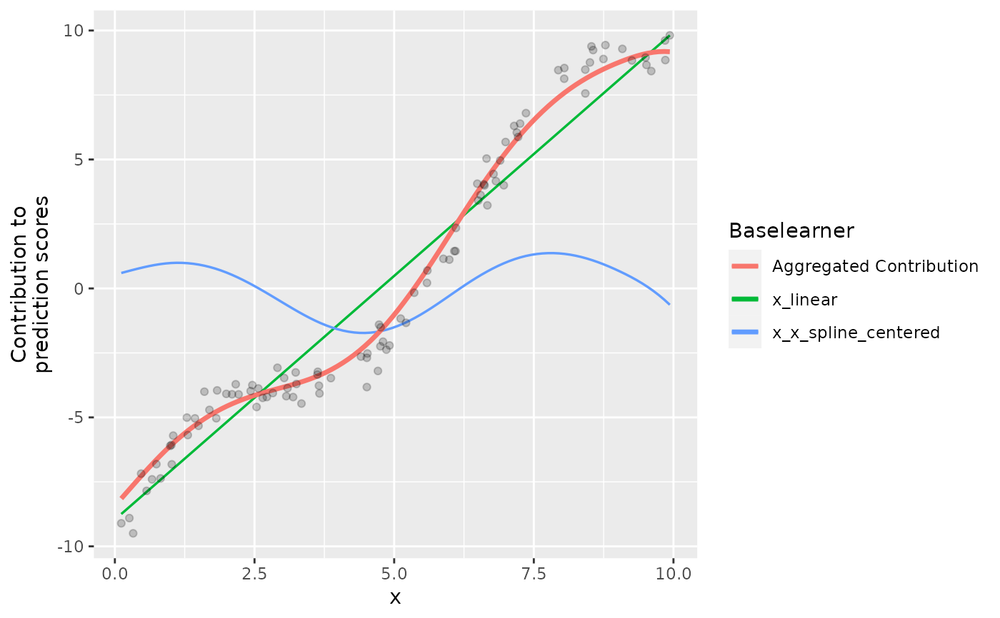

This base learner subtracts the effect of two base learners (usually defined on the same feature). By subtracting the effects, one is not able to predict the other one. This becomes handy for decomposing effects into, e.g., a linear and non-linear component in which the non-linear component is not capable to capture the linear part and hence is selected after the linear effect is estimated.
Format
S4 object.
Methods
$summarizeFactory():() -> ()$transfromData(newdata):list(InMemoryData) -> matrix()$getMeta():() -> list()$getRotation():() -> matrix()
Inherited methods from Baselearner
$getData():() -> matrix()$getDF():() -> integer()$getPenalty():() -> numeric()$getPenaltyMat():() -> matrix()$getFeatureName():() -> character()$getModelName():() -> character()$getBaselearnerId():() -> character()
Examples
# Sample data:
x = runif(100, 0, 10)
y = 2 * sin(x) + 2 * x + rnorm(100, 0, 0.5)
dat = data.frame(x, y)
# S4 wrapper
# Create new data object, a matrix is required as input:
data_mat = cbind(x)
data_source = InMemoryData$new(data_mat, "x")
# Prerequisite: Create a linear and spline base learner:
bl_lin = BaselearnerPolynomial$new(data_source,
list(degree = 1, intercept = TRUE))
bl_sp = BaselearnerPSpline$new(data_source,
list(n_knots = 15, df = 5))
# Now, subtract the linear effect from the spline:
bl_ctr = BaselearnerCentered$new(bl_sp, bl_lin, "ctr")
# Recognize, that the data matrix of this base learner has
# `nrow(bl_sp$getData()) - ncol(bl_lin$getData())` columns:
dim(bl_ctr$getData())
#> [1] 100 17
str(bl_ctr$getMeta())
#> List of 4
#> $ df : num [1, 1] 5
#> $ penalty : num [1, 1] 54.7
#> $ penalty_mat: num [1:17, 1:17] 8.17 -3.197 1.872 0.568 0.295 ...
#> $ rotation : num [1:19, 1:17] -0.22 -0.4 0.828 -0.187 -0.129 ...
# The data matrix is created by rotating the spline data matrix:
all.equal(t(bl_sp$getData()) %*% bl_ctr$getRotation(), bl_ctr$getData())
#> [1] TRUE
# Transform "new data". Internally, the basis of the spline is build and
# then rotated by the rotation matrix to subtract the linear part:
newdata = list(InMemoryData$new(cbind(rnorm(5)), "x"))
bl_ctr$transformData(newdata)
#> $design
#> [,1] [,2] [,3] [,4] [,5] [,6]
#> [1,] -0.16515610 -0.35674500 -0.2410725 -0.2030835 -0.2039283 -0.1499200
#> [2,] -0.16515610 -0.35674500 -0.2410725 -0.2030835 -0.2039283 -0.1499200
#> [3,] 0.18602616 -0.28550574 -0.2042327 -0.1704013 -0.1685957 -0.1218412
#> [4,] 0.45545442 -0.05562758 -0.1558414 -0.1329924 -0.1361532 -0.1022759
#> [5,] 0.08182039 -0.31650770 -0.2169446 -0.1807980 -0.1785597 -0.1287680
#> [,7] [,8] [,9] [,10] [,11] [,12]
#> [1,] -0.11710389 -0.09003953 -0.03456622 -0.006220806 0.016398695 0.06367093
#> [2,] -0.11710389 -0.09003953 -0.03456622 -0.006220806 0.016398695 0.06367093
#> [3,] -0.09177613 -0.06665435 -0.02160958 0.010907900 0.030074114 0.07026071
#> [4,] -0.08340964 -0.06818838 -0.03030398 -0.020798712 -0.006179768 0.02423600
#> [5,] -0.09654394 -0.06957980 -0.02197934 0.013642752 0.034002333 0.07670779
#> [,13] [,14] [,15] [,16] [,17]
#> [1,] 0.11541607 0.15521650 0.2051516 0.15036233 0.016504709
#> [2,] 0.11541607 0.15521650 0.2051516 0.15036233 0.016504709
#> [3,] 0.12071057 0.15557249 0.2013164 0.14605983 0.015985565
#> [4,] 0.05082958 0.07537263 0.1040861 0.07783496 0.008592261
#> [5,] 0.13113804 0.16831517 0.2173434 0.15752415 0.017235086
#>
# R6 wrapper
# Compboost has a wrapper called `$addComponents()` that automatically
cboost = Compboost$new(dat, "y")
# creates and adds the linear base learner and a centered base learner
# as above (the `...` args are passed to `BaselearnerPSpline$new():
cboost$addComponents("x", n_knots = 10, df = 5, bin_root = 2)
# Note that we have used binning to save memory, hence the data matrix
# is reduced to 10 observations:
dim(cboost$baselearner_list$x_x_spline_centered$factory$getData())
#> [1] 10 12
cboost$train(200, 0)
#> Train 200 iterations in 0 Seconds.
#> Final risk based on the train set: 0.39
#>
library(ggplot2)
plotPEUni(cboost, "x") +
geom_point(data = dat, aes(x = x, y = y - c(cboost$offset)), alpha = 0.2)
